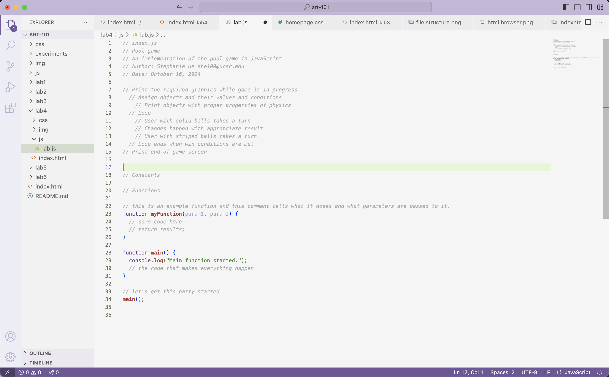
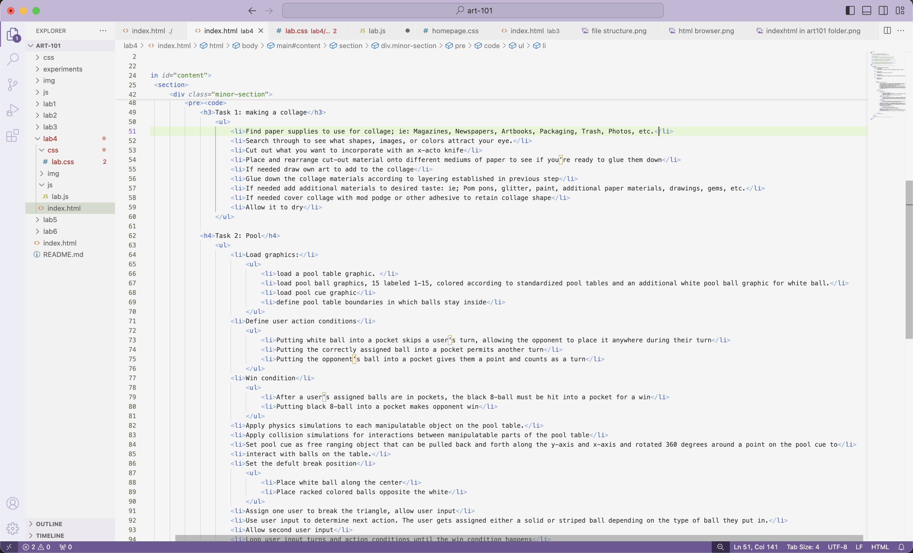

Lab 4 - Pseudocoding and Problem-solving
Challenge
Get in the habit of thinking in terms of pseudocoding before jumping into coding.
Problems
I ran into sizing problems with the text in which they were way too big and spread out. I unfortunately could not figure out how to solve this problem.
Reflection
This assignment was a bit tricky and confusing. Making the pseudocode with my partner was fun and I realized that a lot of details goes into the pool game!
Results
Results are below!
 
Task 1: making a collage
- Find paper supplies to use for collage; ie: Magazines, Newspapers, Artbooks, Packaging, Trash, Photos, etc.
- Search through to see what shapes, images, or colors attract your eye.
- Cut out what you want to incorporate with an x-acto knife
- Place and rearrange cut-out material onto different mediums of paper to see if you’re ready to glue them down
- If needed draw own art to add to the collage
- Glue down the collage materials according to layering established in previous step
- If needed add additional materials to desired taste: ie; Pom pons, glitter, paint, additional paper materials, drawings, gems, etc.
- If needed cover collage with mod podge or other adhesive to retain collage shape
- Allow it to dry
Task 2: Pool
- Load graphics:
- load a pool table graphic.
- load pool ball graphics, 15 labeled 1-15, colored according to standardized pool tables and an additional white pool ball graphic for white ball.
- load pool cue graphic
- define pool table boundaries in which balls stay inside
- Define user action conditions
- Putting white ball into a pocket skips a user’s turn, allowing the opponent to place it anywhere during their turn
- Putting the correctly assigned ball into a pocket permits another turn
- Putting the opponent’s ball into a pocket gives them a point and counts as a turn
- Win condition
- After a user’s assigned balls are in pockets, the black 8-ball must be hit into a pocket for a win
- Putting black 8-ball into a pocket makes opponent win
- Apply physics simulations to each manipulatable object on the pool table.
- Apply collision simulations for interactions between manipulatable parts of the pool table
- Set pool cue as free ranging object that can be pulled back and forth along the y-axis and x-axis and rotated 360 degrees around a point on the pool cue to
- interact with balls on the table.
- Set the defult break position
- Place white ball along the center
- Place racked colored balls opposite the white
- Assign one user to break the triangle, allow user input
- Use user input to determine next action. The user gets assigned either a solid or striped ball depending on the type of ball they put in.
- Allow second user input
- Loop user input turns and action conditions until the win condition happens